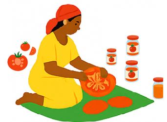
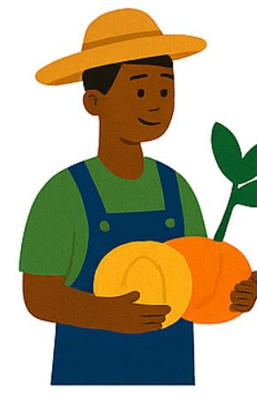
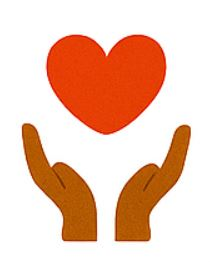
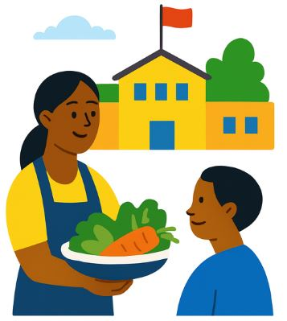

Les TPE Agroalimentaires de Rufisque
Un maillon essentiel de l'économie locale et de la transformation alimentaire.
70%+
TPE agro. portées par des femmes
9
Établissements scolaires avec charte
3
Axes d'action pour les TPE
Les TPE agroalimentaires de Rufisque : leviers pour un système alimentaire durable

Le département de Rufisque abrite un tissu dynamique de petites entreprises agroalimentaires (TPE), dont l’activité est essentielle à l’économie locale et à la transformation des produits agricoles.
Ces unités, souvent dirigées par des femmes, interviennent dans la transformation de fruits, légumes, céréales ou produits halieutiques.
Pourtant, elles sont confrontées à plusieurs freins structurels : difficulté d’accès à des matières premières locales en quantité et qualité suffisantes, prix volatils, dépendance aux circuits longs, et faible structuration des filières.
Ce constat freine leur montée en gamme et leur compétitivité, alors même qu’elles représentent un vecteur central de valorisation de l’agriculture de proximité et de création d’emplois, notamment féminins.
Plus de 60% des TPE déclarent ne pas pouvoir s’approvisionner localement de manière stable.
(Source: Diagnostic SAT, Conseil départemental de Rufisque & Grdr)
Plan d'action du PAT pour les TPE :
Face à ces défis, le Plan Alimentaire Territorial (PAT), porté par le Conseil départemental avec l’appui de CICODEV et du Grdr, a défini un plan d’action structuré autour de trois axes :

1. Faciliter l'approvisionnement local
Mise en lien directe avec les producteurs et mise en place d’outils logistiques mutualisés (transport, stockage).

2. Améliorer la qualité et la sécurité
Formations techniques et accompagnement vers les normes pour les produits transformés.
3. Renforcer l'organisation économique
Accès facilité aux financements et aux marchés publics (ex: cantines scolaires), notamment pour les groupements féminins.
Témoignage (Placeholder) :
"Grâce à l'accompagnement du PAT, j'ai pu améliorer la qualité de mes jus locaux et trouver de nouveaux débouchés pour mes produits. Cela a changé beaucoup de choses pour ma famille." - Mme Diop, transformatrice à Rufisque.
Charte des femmes restauratrices pour une alimentation locale de qualité en milieu scolaire
Contexte et engagement
Dans le cadre du programme AMOPAR, mis en œuvre par le Conseil Départemental de Rufisque avec l’appui du GRDR et de CICODEV Afrique, une initiative structurante a été lancée pour améliorer l’offre alimentaire autour des établissements scolaires. Cette démarche vise à garantir à tous les élèves, y compris ceux qui ne bénéficient pas de la cantine scolaire, un accès à une alimentation saine, équilibrée, et issue du territoire.
Les femmes restauratrices et vendeuses de tables, actrices essentielles de la vie des écoles, ont été identifiées comme des partenaires incontournables pour cette transformation. Avec leur pleine implication, un processus participatif a permis d’aboutir à l’élaboration d’une charte d’engagement, véritable socle commun pour améliorer l’offre alimentaire et promouvoir les produits locaux.

Les principes de la charte :
Promouvoir une alimentation saine et équilibrée
proposer des repas et collations nutritifs, pauvres en sucres et graisses saturées, riches en produits frais, naturels et locaux.
Valoriser les produits locaux et les circuits courts
privilégier l’achat de produits issus de l’agriculture et de la transformation locales (niébé, mil, patate douce, jus locaux, etc.).
Garantir l’hygiène et la sécurité alimentaire
adopter les bonnes pratiques d’hygiène et disposer d’un carnet de santé à jour.
Adapter les prix pour les élèves
proposer des mets et collations à des prix accessibles.
Gérer collectivement les fonds d’appui
utilisation transparente pour l’achat de produits alimentaires et l’amélioration des équipements.
Renforcer les compétences et diffuser les bonnes pratiques
partager les acquis et participer aux actions de sensibilisation.
Contribuer à un environnement scolaire favorable
améliorer le bien-être des élèves et lutter contre la malnutrition.
Une charte co-construite et évolutive
Cette charte a été élaborée à l’issue d’ateliers de concertation organisés dans les neuf établissements enrôlés du département de Rufisque, en présence des équipes pédagogiques, des chargés de cantine, des représentants des parents d’élèves et des gouvernements scolaires. Elle constitue le socle des conventions de partenariat signées avec les établissements et les femmes, dans le cadre du plan d’accompagnement porté par le projet AMOPAR.
Elle est appelée à évoluer en fonction des retours de terrain, des évaluations menées, et des besoins exprimés par les restauratrices et les communautés éducatives.
Emploi et genre dans les TPE agroalimentaires de Rufisque : un levier à valoriser
Dans le département de Rufisque, les très petites entreprises (TPE) de transformation agroalimentaire, souvent informelles, représentent un secteur vital pour l’emploi local, en particulier pour les femmes. Ces TPE, actives dans la transformation de fruits, légumes, céréales ou produits de la mer, jouent un rôle central dans l’économie de proximité et la valorisation des produits agricoles locaux.
des transformatrices sont organisées en GIE
ou associations féminines.
(Source: Diagnostic PAT)
des femmes en emploi dans les Niayes travaillent dans l’économie alimentaire.
des transformateurs de produits alimentaires sont des femmes.
(Source: OCDE/SWAC)
Ces unités génèrent des revenus pour des centaines de ménages, notamment via les activités de cuisson, séchage, conditionnement ou commercialisation. Elles recrutent localement, souvent dans des quartiers populaires où l’accès à l’emploi est limité, contribuant ainsi à la résilience socio-économique des femmes et des jeunes.
Cependant, ces TPE font face à des freins structurels persistants : accès limité aux équipements de qualité, manque de certification sanitaire, difficultés d’accès au financement, et forte précarité de l’emploi féminin, souvent non déclaré ou saisonnier.
Actions du programme AMOPAR (intégré au PAT) :
- Appui à la structuration des GIE féminins, avec des formations à la gestion, la transformation et l’hygiène.
- Valorisation de la commande publique locale, notamment via les cantines scolaires, pour créer un marché durable pour les TPE locales.
- Accompagnement des femmes vers une montée en compétence et une formalisation progressive de leurs activités.
Ainsi, le soutien apporté dans le cadre du Plan Alimentaire Territorial aux TPE agroalimentaires est un investissement dans un secteur fortement féminisé, créateur d’emplois durables et vecteur d’autonomisation économique, au cœur des enjeux du développement local et de la transition alimentaire.